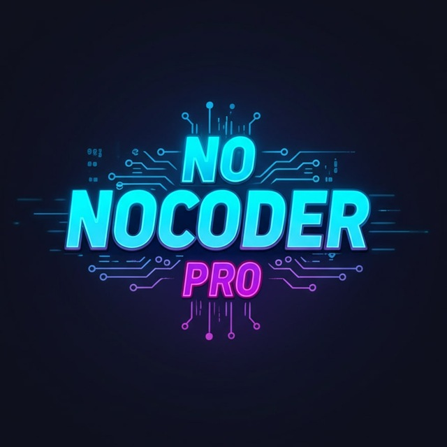

“Busyness causes human talent to lie dormant.”
— Mahir Labib
Raisul Islam
Digital Creator & AI Builder
Hello! I'm Raisul Islam, widely known as Mahir Labib. While my formal coding knowledge is primarily HTML and CSS, I've mastered the art of using AI to bring complex ideas to life.
My journey started with inspiration from my friend Tofazzol Hossain. Today, I focus on refining and enhancing digital tools, proving that passion and the right tools can bridge any skill gap.
My Arsenal
- HTML5
- CSS3
- AI Prompting
- Python (Basics)
- UI/UX Design
- Project Management
- Tool Integration